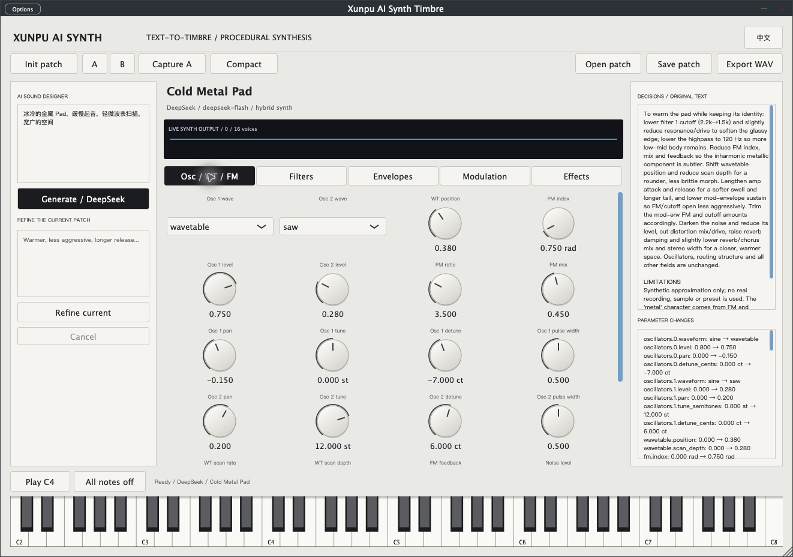

Xunpu AI Synth · 0.4
Text-to-Timbre: a model designs editable synthesis parameters; a local native engine computes the sound. The 0.4 MVP starts from init, supports 16 voices and exposes 90 host parameters across macOS AU, VST3 and Standalone targets.

Selected engineering records include strict AU validation, a JUCE VST3 host harness, 17 parameter-sensitivity measurements and five real provider-designed families with finite nonzero local renders. A recorded one-field refinement changed cutoff from 1500 to 1800 Hz while the other 89 parameters stayed unchanged.
Recorded on Apple M4 / macOS 27.0.1, 21 October 2026. These previews use C4 at velocity 0.8, 2 seconds held and 8 seconds total, 48 kHz stereo PCM24. Signal distinction does not establish perceptual quality or arbitrary-prompt success. Named DAW sessions, physical MIDI and formal listening evaluation remain outstanding.
All creative systems
Xunpu AI Synth
Describe a sound. Keep the controls.
Native instrument · macOS · VST3 / Audio Unit / Standalone

Earlier v0.3 case: a real piano,
designed in words.
DeepSeek proposes a structured sound design. The native instrument applies it to real sampled or synthesized sources, with the parameters available to edit.
This recorded case uses FluidR3 SF2 piano samples. The result was saved through the application and exported by its native audio engine.
真实的钢琴音色，柔和起音，释放 2 秒，混响 20%
Real piano · soft attack · 2-second release · 20% reverb
8-second C4 preview · 48 kHz stereo · 24-bit WAV
One source. Two sound designs.
Two renders from the actual native hybrid engine. Both play C4 at the same velocity; the sound design changes. These examples use the local rule-based designer.
Cello · design B
Native render evidence: MIDI note 60 · velocity 0.8 · note-off at 1 second. View render conditions
Sound design you can inspect.
The musical result remains an editable instrument, with explicit sources, parameters and design decisions.
- Design
- Natural-language Generate and Refine; local rule-based design and a separate DeepSeek provider.
- Play
- Real SF2 samples, imported SFZ/WAV/AIFF and dual-oscillator synthesis, mixed across up to three layers.
- Compare
- Complete A/B sound states, history, envelopes, modulation and shared effects.
- Keep
- Editable JSON patches, DAW state and native WAV preview export. Chinese and English interfaces.